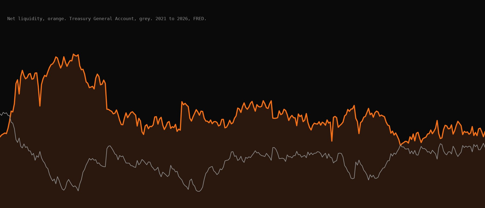
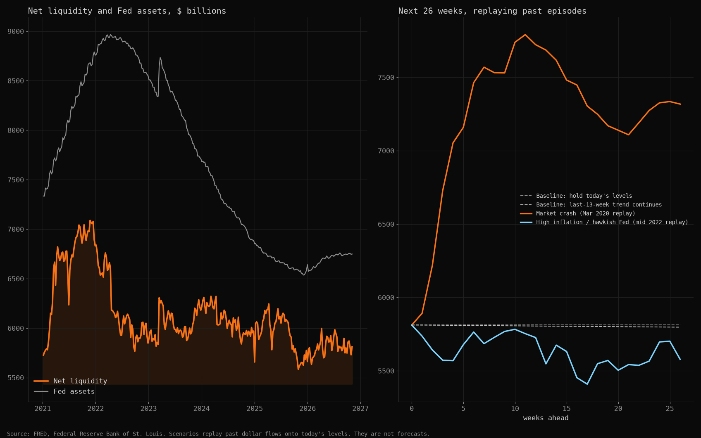
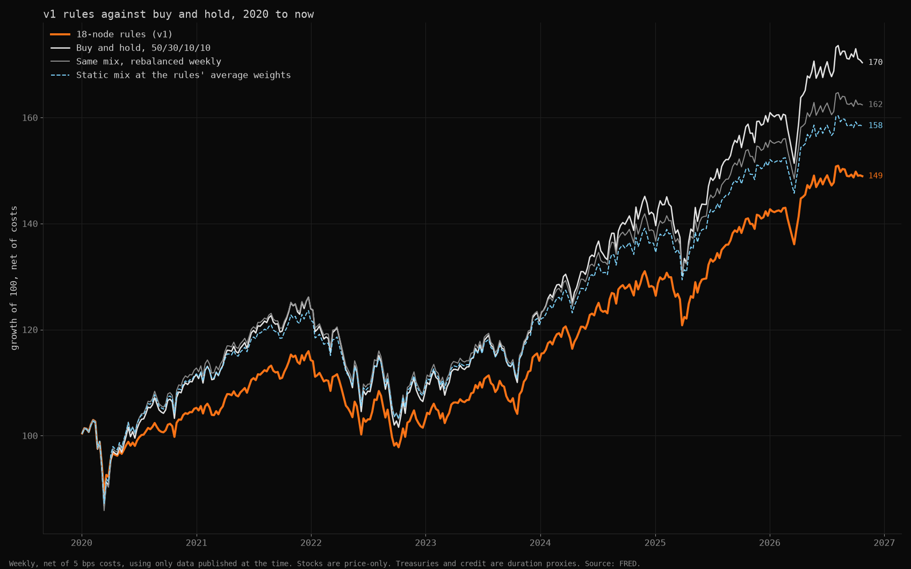
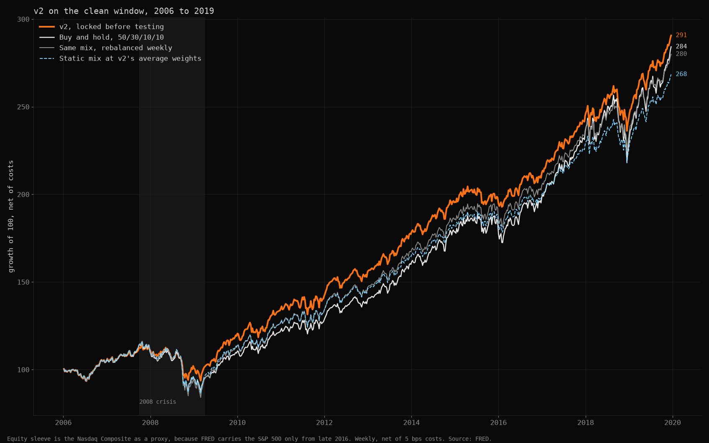

Fed Liquidity Lab.

Net liquidity is the Fed's balance sheet less the Treasury's cash and the overnight reverse repo facility. I tracked it, then tested it.
In short
- The question
- Does net liquidity tell you when to hold less stock?
- Data and method
- FRED data, 18 rules, then a second design locked before I ran it.
- What I found
- No. 6.0 percent a year against 8.1 for buy and hold. The second design failed its own test.
- What it means
- A fair gauge of conditions and a poor timing signal. I would not trade on it.
A weekly tracker with alerts
It pulls the Fed's balance sheet every week, tracks seven measures of inflation and the main gauges of output, and alerts me when a trigger is crossed. The scenarios replay past episodes. I would not read them as forecasts.

Net liquidity, and what two past episodes would do to itNet liquidity since 2021, and two past episodes replayed. Source: FRED. 
Inflation, seven waysLeft, year over year. Right, 3 month annualized. Source: FRED, Cleveland Fed.

Two designs against buy and hold
A year for the rules since 2020, against 8.1 percent for buy and hold.
What the Sahm rule cost, the most of any rule.
Criteria the locked design passed. It failed the one that counts.
How far it beat the same mix in 2008. It was behind in the other 13 years.
Best t-stat out of sample. It needs 2 to tilt.

The 18 rules against buy and holdOrange is the rules. White is buy and hold. Net of 5 bps costs. Source: FRED. 
The locked design on a clean windowIt cut the 2008 loss and ended slightly ahead, inside the noise. Source: FRED.


The second design used four fast nodes, with pass and fail fixed before I ran it. It failed, and I left it alone.
How it is built
- Every series is declared once with its frequency, publication lag and plausible range. The pipeline caches it, records where it came from, and holds back anything that was not public yet on the date being tested.
- Growth rates count calendar months. The October 2025 CPI was never published, and counting rows instead of months made headline CPI look 0.3 points too high.
- The second design was hashed before it was tested, and the script refuses to run if the file has changed.
- More than 140 tests cover the point in time logic, the alerts and the backtest, including checks that changing the future cannot change the past.
What it does not show
Stocks are price only. Treasuries and credit are duration proxies with no defaults. The clean window uses the Nasdaq Composite as its equity sleeve, because FRED carries the S&P 500 only from late 2016. The 2020 to 2026 window is one bull market and one drawdown, so it cannot prove much either way, and I designed the second test after seeing it.
CPI, GDP and a few other series are used as last revised, not as first published, so some revision look ahead remains. Real vintages need an API key I have not used yet.
Nothing here is investment advice. Data from FRED at the Federal Reserve Bank of St. Louis, the Cleveland Fed, the Atlanta Fed and the NY Fed. No Bloomberg data and nothing from an employer.